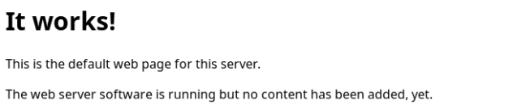
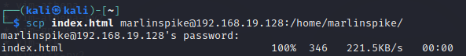

< Retour au sommaire
Modification du contenu web pouvant être mis en production

Voici la page d'accueil du site web
Les fichiers du serveur web se trouve dans le repertoire /var/www/html/. Il suffit de changer le fichier index.html pour changer la page d'accueil du site web.
Pour ce faire nous allons copier les fichiers de notre machine vers la VM du client :
scp index.html marlinspike@192.168.19.128:/home/marlinspikeOn ne peut pas directement copier le fichier vers le repertoire du serveur web car l'utilisateur "marlinspike" n'a pas directement les droits pour le faire.

Il suffit ensuite de se connecter en SSH à la machine puis de copier le fichier vers le repertoire du serveur WEB avec sudo.
ssh marlinspike@192.168.19.128
sudo cp index.html /var/www/html/Maintenant, voici la page d'accueil du site web en production après notre manipulation :